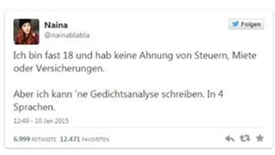

과학기술 드림톡 콘서트
2015년 11월 @ 문막고등학교

Disclaimer (책임의 한계)
본 발표 자료는 학생들을 대상으로 통계, 소프트웨어, 자동차, 제조업, 구매, 스타트업, 대기업, 국내외 대학, 논문/컨퍼런스 등에 기반한 정보로 ’15년 11월 현재 시점에서 개인적인 경험을 바탕하여 재구성한 것으로 정보 제공 및 참고 용도로 작성한 것으로 개인적으로 감수 또는 발생하는 어떠한 손실 또는 피해에 대해서도 배상의 책임을 지지 않습니다.
강연 슬라이드의 일부는 순수 교육목적으로 사용할 목적으로 일부 저작자와 협의 없이 사용을 사전에 허락받지 못한 부분이 일부 포함되어 있음을 사전에 밝혀둡니다.
발표자료 관련 이의나 정정, 기타 문의 사항이 있는 경우 검토 후 즉시 반영하여 드리겠습니다.
17세 소녀의 ‘두 문장’, 독일을 달구다
나는 곧 18살이 되지만 세금, 집세, 보험 등에 대해 모른다. 그러나 시를 분석하는 데는 능하다. 그것도 4개국 언어로.
출처: 17세 소녀의 ‘두 문장’, 독일을 달구다, 시사인 '15년 01월
The future is here, it's just not evenly distributed yet.
William Gibson
기계와의 경쟁
사람과의 경쟁이 아닌 기계와의 경쟁을 준비하는 첫번째 세대
참고: Oxford Martin School study shows nearly half of US jobs could be at risk of computerisation
기계와의 경쟁
사람과의 경쟁이 아닌 기계와의 경쟁을 준비하는 첫번째 세대
-
화이트 컬러 사무 노동자
퀴즈 쇼 -
재밌게 노는 아이들
드론 경주
밖으로 나온 RC카
참고: Oxford Martin School study shows nearly half of US jobs could be at risk of computerisation
기계와의 경쟁
사람과의 경쟁이 아닌 기계와의 경쟁을 준비하는 첫번째 세대
-
바뀌는 세상
로봇과 일자리 경쟁
우버(Uber) 택시
에어비앤비(AirBnB)
참고: Oxford Martin School study shows nearly half of US jobs could be at risk of computerisation
기계와의 경쟁 느낌이 오나요?
[퀴즈] 이 기사는 로봇이 썼을까, 기자가 썼을까
로봇 기자(?)국내에서도 로봇 저널리즘 연구가 활발해지고 있습니다. 이준환 서울대 교수팀은 수개월 전부터 야구 경기를 대상으로 알고리즘으로 작성한 기사를 공개하고 있습니다.
서울대 이준환 교수팀
(한국에서) 기계와의 경쟁
가족, 친구, 동료와 지금부터 준비하세요.
참고: $100 달러 오픈 컴퓨터
3R + 하나 더
읽기, 쓰기, 셈하기, 코딩
참고: 뉴욕타임즈, Reading, Writing, Arithmetic, and Lately, Coding, 2014년 5월
다양한 사고체계
수학적 사고, 통계적 사고, 컴퓨팅 사고, 4번째 패러다임

참고: , 김광두(국가미래연구원장), "창조경제의 개념과 성공조건", 제1회 공개 정책세미나, '13년 4/17
컴퓨팅 사고력
Computational Thinking (컴퓨팅 사고력, 주제발표)
일시 : 2015.10.8(목) 13:30~17:30, 장소 : 연세대학교(서울) 에비슨의생명연구센터, 유일한홀
참고: Wing, Jeannette M., "Computational thinking.", Communications of the ACM49.3 (2006): 33-35.
컴퓨팅 사고력
컴퓨팅 사고력 개괄
전산-X (Computational-X)
Computational X : 기존 산업/학문에 컴퓨터적 사고를 결합
|
Bioinformatics Cheminformatics Chemometrics Computational archaeology Computational biology Computational chemistry Computational economics Computational electromagnetics Computational engineering Computational finance Computational fluid dynamics Computational forensics |
Computational geophysics Computational informatics Computational intelligence Computational law Computational linguistics Computational mathematics Computational mechanics Computational neuroscience Computational particle physics Computational physics Computational statistics Computer algebra |
Environmental simulation Financial modeling Geographic information system(GIS) High performance computing Machine learning Network analysis Neuroinformatics Numerical linear algebra Numerical weather prediction Pattern recognition Scientific visualization |
참고: Wing, Jeannette M. (2010), Computational Thinking: What and Why?,, Carnegie Mellon University.
기계와의 경쟁을 준비
xwMOOC와 함께 하는 열린 컴퓨팅 사고
xwMOOC 관련 정보
|
컴퓨터과학 언플러그드 러플(Rur-ple) 정보교육을 위한 파이썬 라즈베리 파이 소프트웨어 카펜트리 R 팩키지 $100 달러 오픈 컴퓨터 |
강서양천신문 ’15년 9월 기고, 컴퓨터 사고력과 소프트웨어 교육 기고, 글을 쓰는 것은 소프트웨어 개발이다! 한국통계진흥원 발간, 통계의 창 ('15년 여름호) 통계교육원 > 열린교육방 > e-book 게시판, 미래인재 데이터과학지: 교육사례중심 전체 다운로드(100MB) |
/